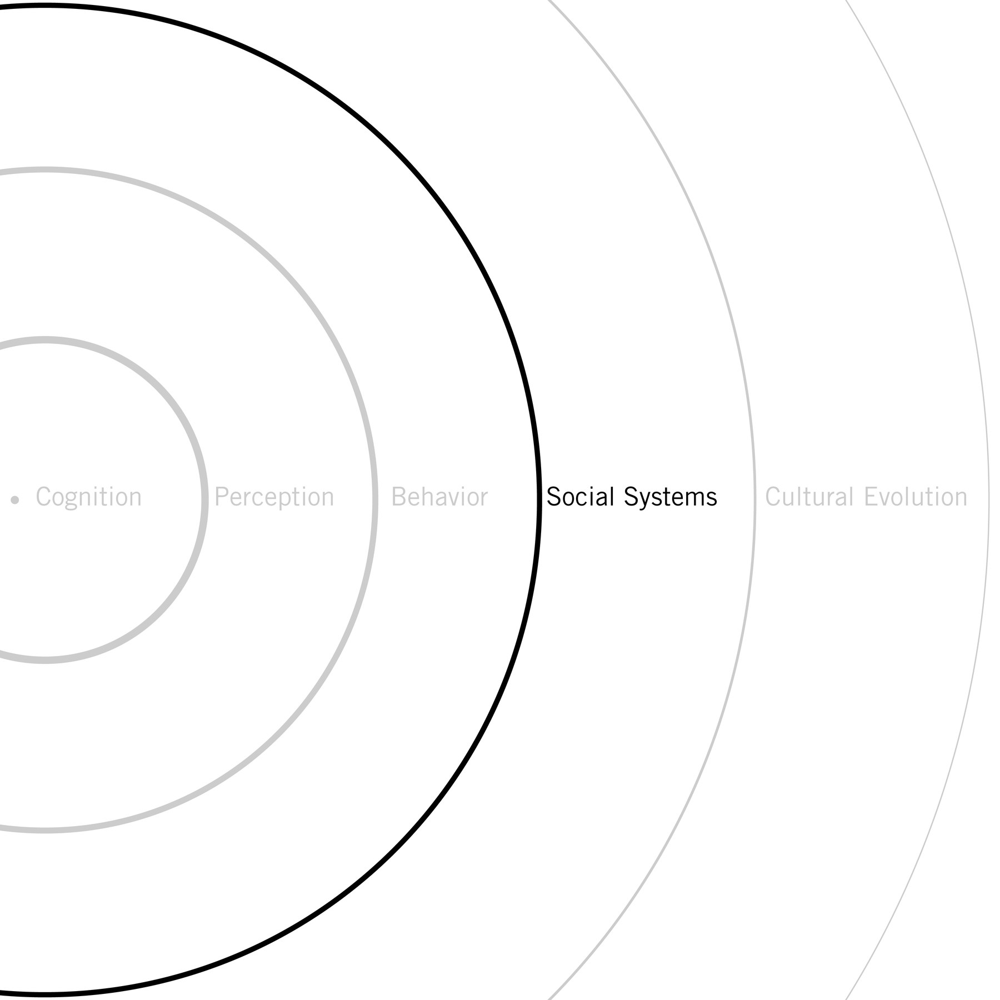

Many aspects of social norms and social structures have previously shaped objects and environments. For example, in eastern cultures, chairs were often the reserve of royalty, with most people sitting on the floor. This chairs themselves quickly evolved into ornate thrones that showed the wealth of the owner. Similarly, office design often dedicates the "corner office" to higher ranked staff members. And in a throwback to the thrones of the past, the highbacked "executive" chairs are reserved for those that have earned it. These symbols denote status and social hierarchy, which then become objectives to strive for. This reminds me of Latour's Actor-Network Theory, in how we are as influenced by objects as we are by people. (In ID's campus as well, there are physical structures that denote professional hierarchies: adjunct faculty don't have access to desks, administrative staff sit in an office separate from faculty etc.)
The paper "Social Structures as Service Design Materials" seeks to translate this knowledge of the influence of social structures on design into a practical framework for attending to these social structures in service design practice. While the framework itself seems like it would translate well across different regions, the experiments conducted by the authors were primarily focused on western countries. I wonder if the framework would have been different if the experiments had included a range of different countries from different regions, i.e., Africa, Asia, and Latin America.
As more services become digitized or self-operated, such a framework becomes more useful, as we often assume that a single digital service would translate effectively across different regions. For example, the culture of tipping varies greatly across the world. Here in the US, it's almost mandatory to tip; in India, it's a lot more optional, and only for good service; in Japan, it’s almost disrespectful to tip. This came up as we were installing the first self-service kiosks in Domino's Pizza India. Since it was a self-service kiosk, there was little need to add a tipping option, as most users didn't feel the need to tip as they were doing the work themselves. Similarly, in the Professor Shea's Methods of Community Development class, we're looking at the impact that IIT has had on the neighborhood of Bronzeville. Where the fences that blocked our campus off from the community might no longer exist, there are plenty of signs and cues that indicate that people from outside the campus are not welcome here.
Understanding of these subtleties of social structures and social norms is increasingly important, not just for service designers, but for designers of all kinds. For a graphic designer or industrial designer, it may seem apt to appropriate a certain symbol associated with a culture, but without understanding the meaning that symbol has to said culture, it could result in a design that's racist or derogatory. The framework provided by Vink and Koskela-Huotari is a great start in that regard.